Kiki
Kiki，来自北京科技大学，环境工程专业。2014年9月她在广州第一次接触Toastmasters，被那里成员的热情打动，在Sysugz头马待了半年；回到北京后，偶然在网上发现了北航头马，以嘉宾身份参加一次会议后，便决定在这里继续自己的头马旅程——"虽然两段旅程始于不同的城市、遇见不同的人，但那份善良、友好与活力是相同的。"2015年9月，她正式入会，并在110次会议献上破冰演讲《K&K》，一上台就把Bowen"踹"出了名场面，从此被打趣"和Kiki一起上楼是件危险的事"。
入会后的她几乎以每次会议一篇的节奏狂飙CC：从手机依赖的《I Have a Plan》、中文的《鬼故事》、打无准备之仗的《I am not ready》，到那篇让自己风格大转变、第一次拿出最深感情而摘得全场最佳的中文演讲《泪点》。她说："只有拿出我最深藏的感情才能触动观众最深的内心……我认为这才是演讲的意义所在。"环境工程的底色也写进了她的演讲——《When Cloth Gets Replaced By Tissue》《A Cancer is Destroying You》都在用对比唤起人们对环境与"懒癌"的觉醒。
她不只是讲者。2016年上半年，她担任北航头马主席（"铁血现主席"），主持换届、组织三周年晚会，把接力棒交给书华(Joshua)时一度哽咽。她还是俱乐部里活跃的TTM与Toastmaster主持，是公众号里那位自称"小编"、笔下妙趣横生、给新人Andy做入会专访的"K记者"；圣诞晚会上盛装出席表演三句半，被徒弟称作"师傅"。她身上有种反差萌：长发温柔，却练空手道、一掌劈断两厘米木板，被赞"女儿当自强"。
2016年春，她代表北航出战春季比赛中文背稿组，带来《里约热内卢》，笑谈自己从小l、n不分到终于纠正路牌拼音的骄傲。卸任主席后，她在三周年晚会和后续会议中渐渐告别这个舞台。从破冰到主席，从逗比鸡汤到真情流露，她用一程又一程的演讲，把自己活成了北航头马里那个"颜色不一样的鬼火"。
里程碑
- 2014-09 在广州初识头马 ↗在广州接触Toastmasters，被成员热情打动，加入Sysugz头马半年。
- 2015-09 加入北航头马 ↗回到北京后偶然在网上发现北航头马，以嘉宾身份参会后正式入会，新会员介绍登场。
- 2015-09-11 破冰首秀《K&K》 ↗在110次会议完成CC1破冰演讲，台上'踹Bowen'成名场面。
- 2015-11-20 《泪点》风格转变并获最佳 ↗第一次拿出最深感情，从逗比鸡汤转向真情流露，119次会议获最佳备稿演讲。
- 2016-03-11 代表北航出战春季比赛 ↗在128次会议春季中文背稿比赛中演讲《里约热内卢》。
- 2016-06 卸任主席并告别 ↗142次会议换届将主席交给书华(Joshua)；三周年晚会上以'泥上偶然留爪印，鸿飞哪复计东西'告别。
- 2016上半年 当选并担任俱乐部主席成为北航头马主席（'铁血现主席'），主持换届与三周年晚会。
- 2017-06-02 病愈归来献CC10 ↗曾因病住院休学，归来在175次会议完成CC10《A Cancer is Destroying You》。
闯关之路 · Competent Communication
做过的演讲 · 13 场
担任过的职务 · 俱乐部官员
担任过的会议角色
为俱乐部做的事
- 2016年上半年担任北航头马主席，主持官员换届、组织俱乐部三周年晚会，平稳交接给下一届。
- 长期担任俱乐部公众号'小编/K记者'，撰写大量会议纪要与预告，并为新会员做入会专访，是俱乐部对外形象的重要执笔人。
- 多次担任Toastmaster主持、即兴主持TTM与点评官Evaluator，设计'旅行的意义''Mask''Compromise'等会议主题。
- 代表北航头马参加2016春季演讲比赛中文组，为俱乐部争光。
- 在圣诞晚会等活动中盛装表演三句半、笛子等节目，带动气氛；以空手道展示鼓舞会员。
- 以身作则高产完成CC1-CC10系列演讲，并主动探索从幽默到真情的多种演讲风格，为新会员树立榜样。
照片墙 · 时间线
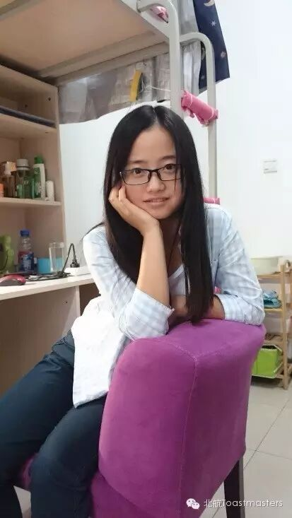
✓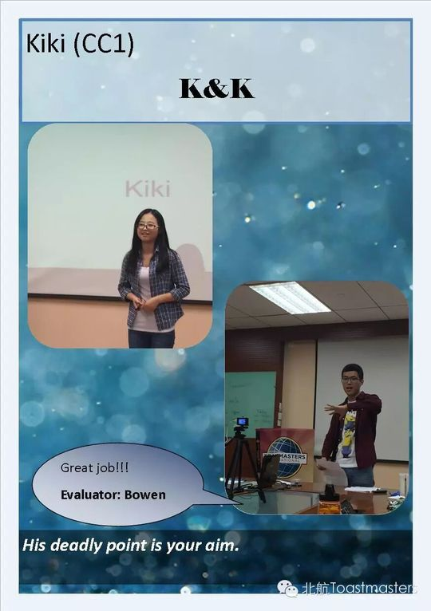
✓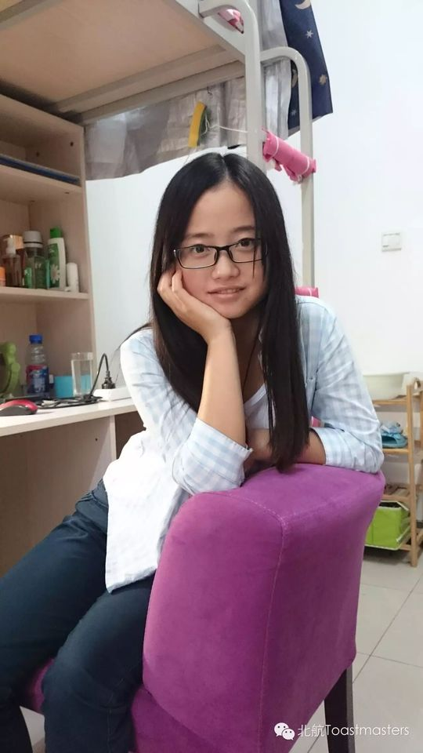
✓ ✓
✓ ✓
✓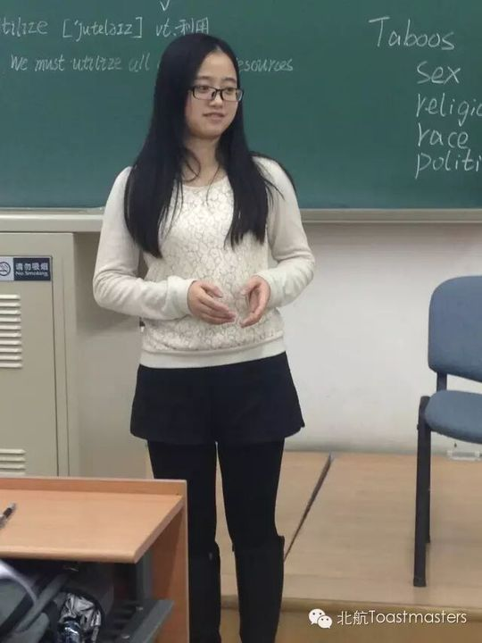
✓ ✓
✓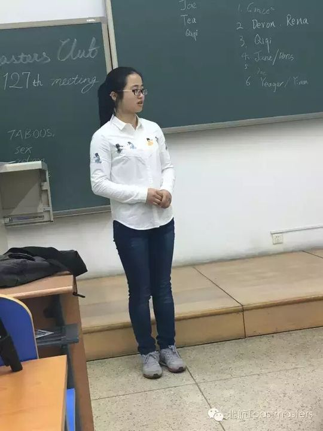
✓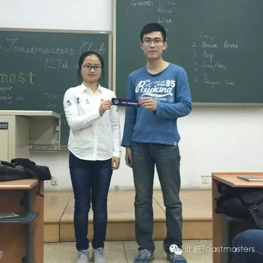
✓ ✓
✓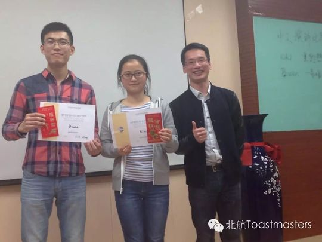
✓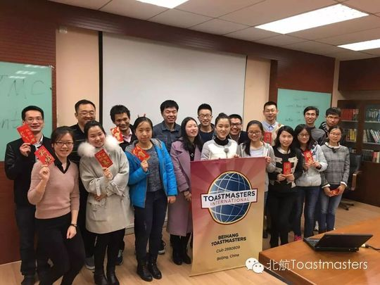
✓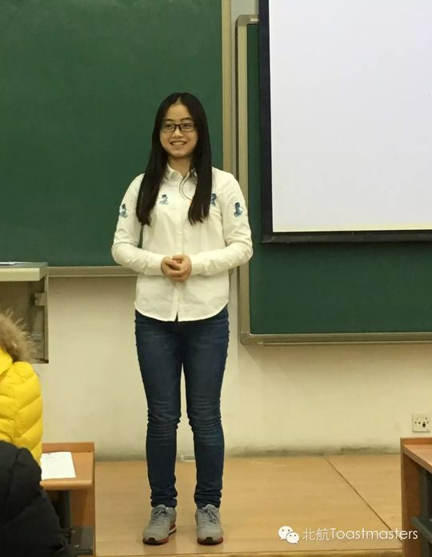
✓ ✓
✓ ✓
✓ ✓
✓ ✓
✓ ✓
✓ ✓
✓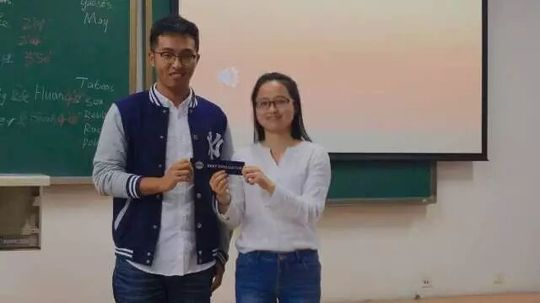
✓ ✓
✓ ✓
✓ ✓
✓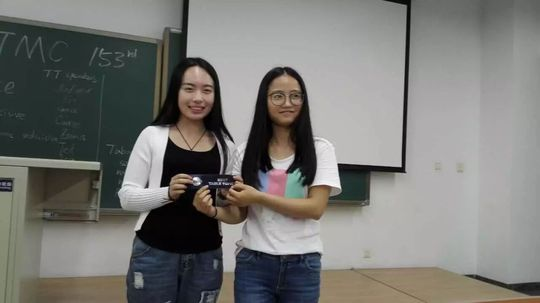
✓ ✓
✓ ✓
✓ ✓
✓ ✓
✓ ✓
✓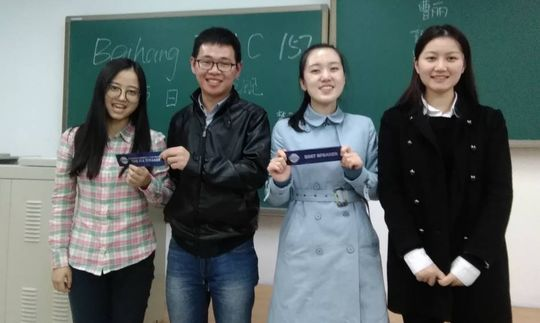
✓完整足迹 · 40 次出现（点开，每条可跳转原文）
- 2015-09-11第110次 · 做CC1演讲《K&K》
- 2015-09-16新会员自我介绍(转载)
- 2015-09-17作为新会员入会并自我介绍
- 2015-10-09第113次 · 会议预告：将做CC2演讲《I Have A Plan》
- 2015-10-14第113次 · 做CC2备稿演讲《I Have a Plan》，谈摆脱手机依赖
- 2015-10-19作为K记者采访新会员Andy
- 2015-10-22第115次 · 会议预告：将做CC3中文演讲《鬼故事》
- 2015-10-26第115次 · 做CC3中文备稿演讲《鬼故事》
- 2015-10-29第116次 · 会议预告：担任即兴演讲主持人(TTM)
- 2015-11-11第118次 · 会议预告：将做CC4演讲《I am not ready》
- 2015-11-17第118次 · 做CC4备稿演讲《I am not ready》并获最佳演讲
- 2015-11-19第119次 · 会议预告：将做CC5备稿演讲《泪点》
- 2015-11-23第119次 · 做CC5备稿演讲《泪点》，尝试新风格获最佳演讲
- 2015-12-07第121次 · 与Vance搭档即兴演讲谈家庭选择
- 2015-12-14第122次 · 122nd meeting minutes of Beihang TMC
- 2016-01-01第124次 · 124th meeting-Christmas Party minutes of
- 2016-01-14第125次 · 125th meeting minutes of Beihang TMC
- 2016-02-25第126次 · Leaving Home@BeihangTMC 126th Meeting 19
- 2016-03-04第127次 · Almost@BeihangTMC 127th Meeting 19:30 Ma
- 2016-03-09第127次 · 127th meeting minutes of Beihang TMC
- 2016-03-10第128次 · 2016 Spring Contest@Beihang TMC 128th Me
- 2016-03-16第128次 · Minutes of 2016 Spring Contest@Beihang T
- 2016-04-09第132次 · To Make A Living@Joint with AEC, 132nd M
- 2016-04-13第132次 · Beihang&Ameco Excellent联合meeting@minutes
- 2016-05-19第138次 · 520@ Beihang TMC 138th Meeting 19:30 May
- 2016-05-20第138次 · 520@ Beihang TMC 138th Meeting 19:30 May
- 2016-05-24第138次 · 520@minutes of Beihang TMC 138th Meeting
- 2016-06-16第142次 · Compromise@BeihangTMC 142nd Meeting 19:3
- 2016-06-20第142次 · Compromise@minutes of BeihangTMC 142nd M
- 2016-06-27Minutes of Beihang TMC 3rd Anniversary C
- 2016-09-29第154次 · 旅行的意义@Beihang TMC 154th Meeting@19:30 Se
- 2016-10-20第156次 · R.M.B.@Beihang TMC 156th Meeting@19:30 O
- 2016-10-26第156次 · R.M.B. @minutes of 北航 TMC 156rd Meeting
- 2016-11-22第159次 · Movies @minutes of 北航 TMC 159rd Meeting
- 2016-11-26第160次 · 朋友 @minutes of 北航 TMC 160th Meeting
- 2016-12-08第162次 · Role on the team @Beihang TMC162nd Meeti
- 2017-01-06第164次 · 元旦趴~~@minutes of Beihang TMC164th Meetin
- 2017-06-01第175次 · Ode to Joy@Beihang TMC175th Meeting@19:3
- 2017-06-06第175次 · Ode to Joy@BeiHang TMC 175th Meeting Min
- 2017-06-24第178次 · 毕业@BeiHang TMC 178th Meeting Minutes